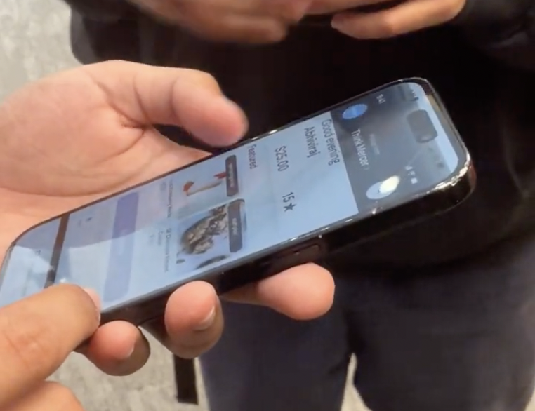
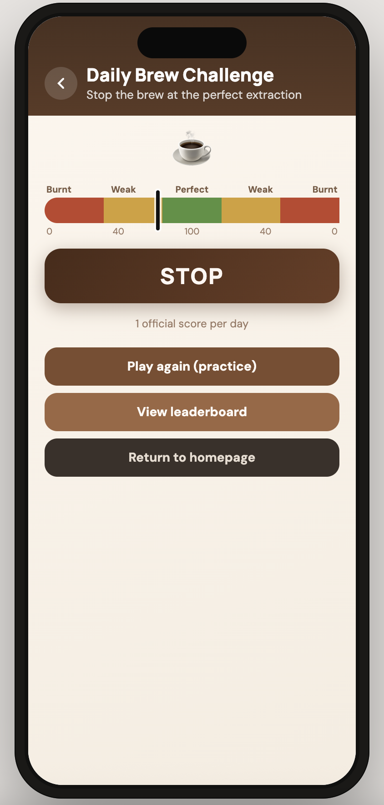
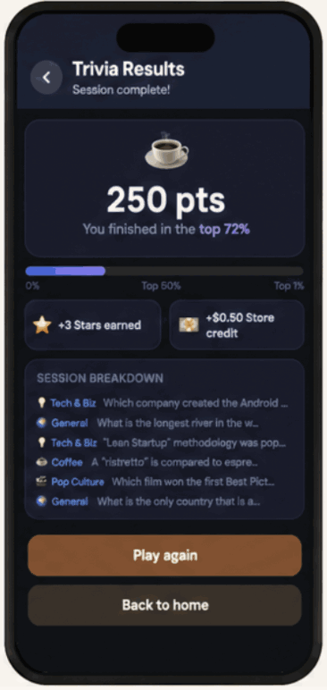

Method 01
Venture memo + product framing
I started from the business thesis behind Per Diem: merchant-owned digital channels, Square integration, and a strong fit with high-frequency cafe behavior.
Research archive / Y Combinator-backed startup / New York
Research for a Y Combinator-backed startup in New York, focused on why loyal cafe regulars still do not adopt Per Diem and what kind of value would make the app feel immediately worth opening.
Per Diem already had a strong merchant story: independent cafes could own their customer relationship instead of relying entirely on marketplace platforms. The harder problem sat on the consumer side. Through venture framing, field interviews, and weekly synthesis, I helped narrow the brief from "improve the app" into a more specific question about app fatigue, reward clarity, and repeat behavior in cafe spaces.

Per Diem is a merchant-owned ordering and loyalty product for independent cafes. My team was asked to look at how the app could become more compelling for users, especially people who already spend time in coffee shops but still default to ordering in person.
What made the project interesting was that the answer was not simply "better rewards" or "more features." The useful work was figuring out where the real friction lived: discoverability, sign-up resistance, vague reward language, and the fact that many regulars treat cafes as social or work spaces, not just transaction points.
The venture memo made one thing clear early on: Per Diem's merchant value proposition was already strong. The product gave independent cafes a direct digital channel, Square integration, and more control over repeat customer relationships than they would have through large marketplace platforms.
The unresolved question was consumer behavior. High-frequency coffee shops looked like the strongest wedge because they already support repeat routines and loyalty behavior. But from a user point of view, "download one more cafe app" is a high bar. That tension became the strategic constraint for the research: the app needed an immediate, visible reason to matter.
I approached the project by looking at both the business framing and the day-to-day behavior around coffee routines. Instead of jumping into interface changes, we used research to understand who might adopt the product, what would stop them, and which assumptions needed to be tested before designing anything more ambitious.
Methods
Method 01
I started from the business thesis behind Per Diem: merchant-owned digital channels, Square integration, and a strong fit with high-frequency cafe behavior.
Method 02
The interview guide focused on coffee habits, ordering behavior, app download thresholds, loyalty expectations, and what actually makes a cafe experience feel good.
Method 03
We spoke with students and regular cafe users, especially people who stay for long work or study sessions and often form repeat habits around a specific place.
Method 04
As ideas evolved, we tested which engagement concepts felt useful, which ones felt distracting, and what users would realistically return to over time.
Findings
Finding 01
Adoption could not be treated as a UI problem alone. For some users, the first hurdle was basic discoverability.
Finding 02
Discounts, free items, and obvious value performed better than vague points or delayed rewards that required too much interpretation.
Finding 03
The strongest segment was not just "coffee buyers." It was regulars who work, study, or sit with friends for hours and return to the same atmosphere repeatedly.
Finding 04
Social concepts were intriguing, but users were more responsive when the interaction stayed lightweight, clear, and optional rather than overly public or complicated.
The project became sharper once we stopped treating "coffee app users" as one general audience. The more useful segment was high-frequency cafe regulars, especially students and workers who stay for long sessions and build habits around one place.
That shift changed the product question. Instead of asking how to digitize ordering more completely, we asked what would make the app feel relevant between orders, while people were already in the cafe and open to a small repeatable interaction.
Users did not want another single-purpose app unless the value showed up quickly and clearly.
People who return often and spend time inside the cafe offered a stronger retention opportunity than occasional passersby.
Hidden reward states, vague icons, and buried gift-card flows made the benefit feel weaker than it really was.
The stronger direction was one simple recurring interaction that gave people a reason to reopen the app.
One of the most useful reframes from the interviews was that Per Diem did not simply need "more engagement." It needed a reason for users to open it without feeling like they were doing extra work.
Several users said they would download an app for an obvious perk like a free coffee or discount, but not for a vague future reward. Others were confused by the way rewards and gift-card flows were surfaced. That told us the adoption problem lived at the intersection of incentive design, discoverability, and trust.
From there, the brief became more disciplined: create a light repeat interaction that fits cafe dwell time, gives immediate feedback, and does not interrupt the core ordering flow.
The concept space moved through several ideas, including social connection features, sit-in rewards, and more game-like mechanics. The research and weekly feedback made that space narrower. Heavier concepts introduced privacy concerns or felt too demanding for a quick cafe interaction.
The more promising direction was a lightweight challenge and trivia loop: something easy to understand, easy to repeat, and more compatible with the existing reward system. That direction gave the app a clearer behavior loop without overcomplicating the product.

Concept direction
A small daily challenge gave regulars a concrete reason to reopen the app while they were already in the cafe.

Feedback loop
Visible scores, progress, and store credit made the reward feel more immediate and legible than an abstract loyalty promise.
I liked this project because it showed me how much better a team can design once the segment is sharpened and the assumptions are named clearly. The most valuable part was not generating more feature ideas. It was validating where the real resistance lived and letting that evidence change the direction.
It also reinforced something I care about in UX research: a good study should help a product team decide what not to build. In this case, the work became strongest when the team moved away from broad engagement ideas and toward a smaller, clearer loop that matched user behavior more honestly.
This was one of the clearest examples of how interviewing, synthesizing, and iterating can turn a broad business question into a more focused product direction.